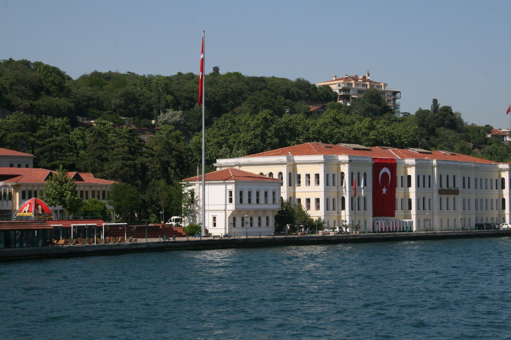

Geometry and Arithmetic around Teichmüller Theory
November 15-19, 2011
Galatasaray University, İstanbul, Turkey
Objectives
This is a conference on Teichmüller theory. Sessions are devoted to
talks by researchers (including Ph.D. students). The aim of the
event is to introduce the geometry of the Teichmüller spaces to young
researchers and communicate new results concerning various
Teichmüller spaces and their relation to arithmetic.
{kind=link}
Scientific Committee
- Mustafa Korkmaz (Middle East Technical University, Ankara)
- Athanase Papadopoulos (Université de Strasbourg, Strasbourg)
- Robert Penner (Aarhus University, Aarhus / CalTech, CA)
- A. Muhammed Uludağ (Galatasaray University, İstanbul)
Organizing Committee
- Athanase Papadopoulos (Université de Strasbourg, Strasbourg)
- İsmail Sağlam (Galatasaray University / Koç University, İstanbul)
- Celal Cem Sarıoğlu (Dokuz Eylül University, İzmir)
- Susumu Tanabe (Galatasaray University, İstanbul)
- A. Muhammed Uludağ (Galatasaray University, İstanbul)
- Ayberk Zeytin (Galatasaray University, Ankara)
As an organizing committee, we are greatefull to Ph.D. students Merve Durmuş and Selçuk Kayacan for their helps during the conference
Speakers
- Norbert A’Campo
- Charalampos Charitos
- Alex Degtyarev
- Amir Dzambic
- Ali Göktürk
- Gabino Gonzalez-Diez
- Yi Huang
- Lizhen Ji
- Mustafa Korkmaz
- Stefano Maggiolo
- Florian Nisbach
- Paul Norbury
- Athanase Papadopoulos
- Flavia Poma
- David Radnell
- Nermin Salepci
- Gabriela Weitze-Schmithüsen
- Saadet Öykü Yurttaş
Program
Application
To apply, please fill the application form.
Normally, the deadline for all participants is October 14, 2011, but if you are planning to give a talk, you should apply before September 2, 2011 and send title and abstract of your talk to either Celal Cem Sarıoğlu or Ayberk Zeytin, their gmail adresses are celalcem and ayberkz, respectively.
There is a TÜBİTAK support which is avaliable only for graduate students and researchers of age at most 35 and who will participate the conference outside from İstanbul. Deadline for Turkish applicants who require a financial support is August 3, 2011.
Registration Fee
There will be a 50€ registration fee for the conference. You can pay during the conference.
Help
When you need a help, please contact with Celal Cem Sarıoğlu or Ayberk Zeytin. Their gmail adresses are celalcem and ayberkz, respectively.
Hotel Info
The official hotel of the conference is Çırağan Hotel. This hotel provides only basic accomodation. In case you prefer a more comfortable stay, you may make your own hotel reservation, preferrably in the quarters of Galata, Cihangir, Besiktas, Ortakoy or Uskudar.- Çırağan Hotel
(10 minutes by WALK from the university):
Tel: +90 212 260 02 30
Address: Muvezzi Caddesi No:1, 34349 Besiktas, Istanbul
Prices: 70TRY(Single)/ 95TRY(Double)- breakfast is not included. Breakfast: 10TRYÇıragan Hotel is at 10 minutes walk distance from the Galatasaray University. To learn how you can go to the Çırağan hotel, please read the paragraph answering the question How to reach Galatasaray University? which is in the Useful info part of this page. Keep in mind that, Çıragan hotel is one bus stop before the university. In addition, near by the Çırağan Hotel, there is another 5-star luxiruous hotel named Çırağan Hotel Kempinski, which is a part of the Çırağan Palace. So, if you take a taxi from the airport, and give the address of the Çırağan Hotel, your driver will absolutely want to drop you to the luxiruous Ciragan Hotel Kempinsky. Don't try in vain to convince him that there may exist a modest hotel with almost the same name. You may instead let your driver bring you to the Hotel Kempinsky. Once you are there, you may either walk till the Ciragan Hotel or tell somebody to indicate him the way--you may practice on the interactive googlemaps which is on the venue part of this page.
- La Maison (15-20
minutes by WALK from the university):
Address: Muvezzi Cad. No:63, 80700 Ciragan - Besiktas
If you are planning to stay at La Maison hotel, please make your own reservation from its webpage or contacting them via e-mail: mail@lamaison.com.tr. Since La maison hotel is quite confortable, it will be much more expensive comparing to the Çırağan Hotel.
Room Properties: Phone, Air Conditioning, Television, Hair Dryer, Balcony, TV Satellite, WC, Bath, Minibar, Safety Box
Hotel Properties: Restaurant, Bar, Meeting Room, Dry Cleaning, Generator, Safety Box, Otopark
In addition, La Maison is on the same street with Çırağan hotel, continue to walk 5 or 6 minutes along the Müvezzi street, on the top of hill you will see the La Maison hotel.
Useful Info
- How to reach Galatasaray University?:
Galatasaray University is 24 km away from the İSTANBUL ATATÜRK AIRPORT. Right in front of the exit door of the Ataturk International Airport, take the HAVAŞ bus to TAKSİM (40 mn, 10 TRY) and get off at the last stop, TAKSIM SQUARE (for detailed information about HAVAS buses please visit http://www.havas.net/en/shuttle-parking/istanbul-ataturk-airport/ ). Then either take a taxi (15mn, ~15 TRY), or take a bus and get off at the stop Galatasaray University. The number of busses are: 40 (Taksim - Sarıyer), 42T (Taksim - Bahçeköy), 40T (Taksim - İstinye - Dereiçi), DT1 (Taksim - Ortaköy Dereboyu), DT2 (Taksim - Ortaköy Dereboyu).
Second possibility, from İstanbul Atatürk Airport to Galatasaray University is taking a taxi (45 mn, ~60 TRY).
Finally, you may take the metro (1.3 TRY) from İstanbul Atatürk Airport and change to tramway (1.3 TRY) at the Zeytinburnu station. Get off at the last stop in Kabataş. From Kabatas taxi costs 7 TRY, there are also regular buses (Ortaköy direction, 1.3 TRY).
If you are coming from Sabiha Gökçen Airport, take the HAVAŞ bus to TAKSİM (~1.5 hr, 17 TRY) (for more detailed information, please visit http://www.havas.net/en/shuttle-parking/istanbul-sabiha-gokcen-airport/ ).
Keep in mind that, Atatürk Airport is more closer than Sabiha Gökçen Airport to the Galatasary University.
- Local Information:
Galatasaray University is at 10-15 minutes by walk from both Beşiktaş and Ortaköy. If one wants to take a bus to University, he/she can take any bus working on the shore (for example, the number of busses from Kabataş: 22, 22RE, 25E; from Ortaköy: 40, 40T, 42T, DT1, DT2).
The best way to reach Galatasaray University from Anatolian side of the city is to take a boat to Beşiktaş from Kadıköy or Üsküdar.
- Time Schedule of IDO Ferries: http://sehirhatlari.com.tr/en
- Istanbul Rail Network Map http://www.istanbul-ulasim.com.tr/media/8540/erisim_2200px_1546px-01.jpg
- Bank Services:
In general Banks are open between 8:30 - 17:30 from Monday to Friday.
- Currency:
The currency in Turkey is Turkish Lira (TRY). Actually 1 US $ = 1.77 TRY and 1 Euro = 2.45 TRY (November 02, 2011).
- Drinking Water:
Although it is safe to drink tap water, it is recommended to buy bottled drink water which can be found almost everywhere at stores. There are several supermarkets in Beşiktaş which is 15 minutes on walk from GS University. You can safely brush your teeth with tap water.
- Electricity:
The electricity supply is 220 V, 50 Hz, with the type of sockets which are standard in most European countries.
- Language:
In Turkey the official language is Turkish. The Turkish language comes from Central Asian Languages Family and very different from the european languages. The Turkish alphabet is based on the latin alphabet. In general, in Istanbul many people talk English and you can easily communicate with other people. As İstanbul is a touristic city you can find many tourism offices.
- Phone Information:
As it belongs to two continents in İstanbul there are two geographical regions : European and Asian sides. The local telephone code of European side is 212 and the one of the Asian side is 216. The national telephone code of Turkey is 90. All of the telephone numbers consist of 7 digits. For example telephone number of Galatasaray University is 2274480 and the code of the European side is 212. So if you want to call Galatasaray University from Asian side the number transforms into 0 212 2274480. If you want to call the same number from abroad it transforms into 00 90 212 2274480. There are prepayed telephone cards of Turkish Telecom specially designed for calling abroad.
- Shopping:
Almost all of the shopping centers are open every day until 22:00 hours.
- Safety:
Beware of dangerous and inconsiderate driving, especially when crossing roads. Even if you are on a pedestrian crossing, look carefully before crossing. Turkey is a comparatively safe country as far as crime is concerned, but it is best to take reasonable precautions against pickpockets in crowded areas.
- Time Zone:
The time zone is 1 hour later from Central European Time Zone, 2 hours later from the Greenwich Mean Time.
- Visa information for foreigners (general):
http://www.mfa.gov.tr/visa-information-for-foreigners.en.mfa"
{kind=link}
© GSÜ Math. Tüm hakları saklıdır.